TRIP OVERVIEW
Day 1 – National Gallery · Harpa · Old Harbour & Grandagarður
Day 2 – Hallgrímskirkja · Settlement Exhibition · Sundhöllin · National Museum
Day 3 – Þingvellir · Geysir & Strokkur · Gullfoss · Kerið
Day 4 – Seljalandsfoss · Skógafoss · Dyrhólaey · Reynisfjara
Day 5 – Búðakirkja · Arnarstapi · Djúpalónssandur · Kirkjufell
Day 6 – Öskjuhlíð Hill · Perlan · Nauthólsvík · Sky Lagoon
Day 7 – Blue Lagoon · Bridge Between Continents · Gunnuhver · Valahnúkamöl
Day 8 – Háifoss · Sigöldugljúfur · Landmannalaugar
Day 1
🏨 From Hotel: 🚶 3 min · 🚕 2 min → National Gallery of Iceland
1. National Gallery of Iceland
↳ Iceland's foremost art collection spanning five centuries — Icelandic masters, Nordic moderns, and contemporary sculpture in a bright neoclassical building on Tjörnin pond. Free entry makes this the ideal first stop.
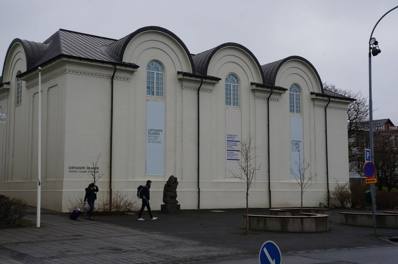
🚶 12 min · 🚕 3 min → Harpa
2. Harpa Concert Hall
↳ Award-winning glass-and-steel concert hall on the waterfront, designed with Ólafur Elíasson's honeycomb facade. Freely walkable interior with harbour views and acoustic architecture worth exploring even without a show.
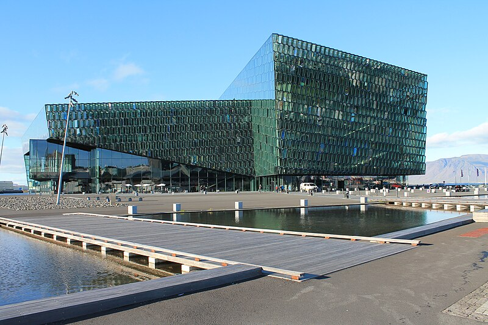
🚶 6 min · 🚕 2 min → Old Harbour
3. Old Harbour & Grandagarður
↳ Reykjavík's working old harbour, lined with fishing boats, street art murals, and the Grandi district's converted warehouses — now home to food halls, artist studios, and whale-watching piers. Free to explore at any pace.
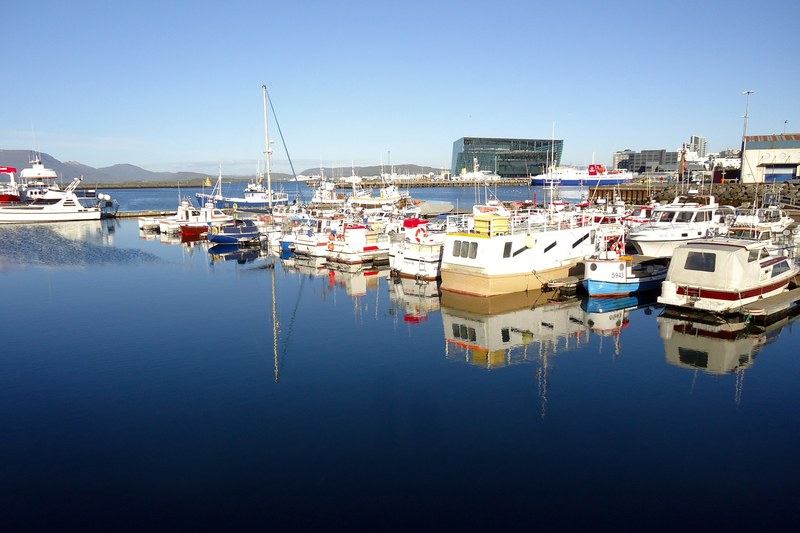
🚶 13 min · 🚕 3 min → hotel
Day 2
🏨 From Hotel: 🚶 7 min · 🚕 3 min → Hallgrímskirkja
1. Hallgrímskirkja
↳ Iceland's tallest building and most recognisable landmark — a concrete expressionist church whose 74-metre tower offers a 360° panorama over the city and Faxaflói Bay. The Leif Eriksson statue stands at the entrance.
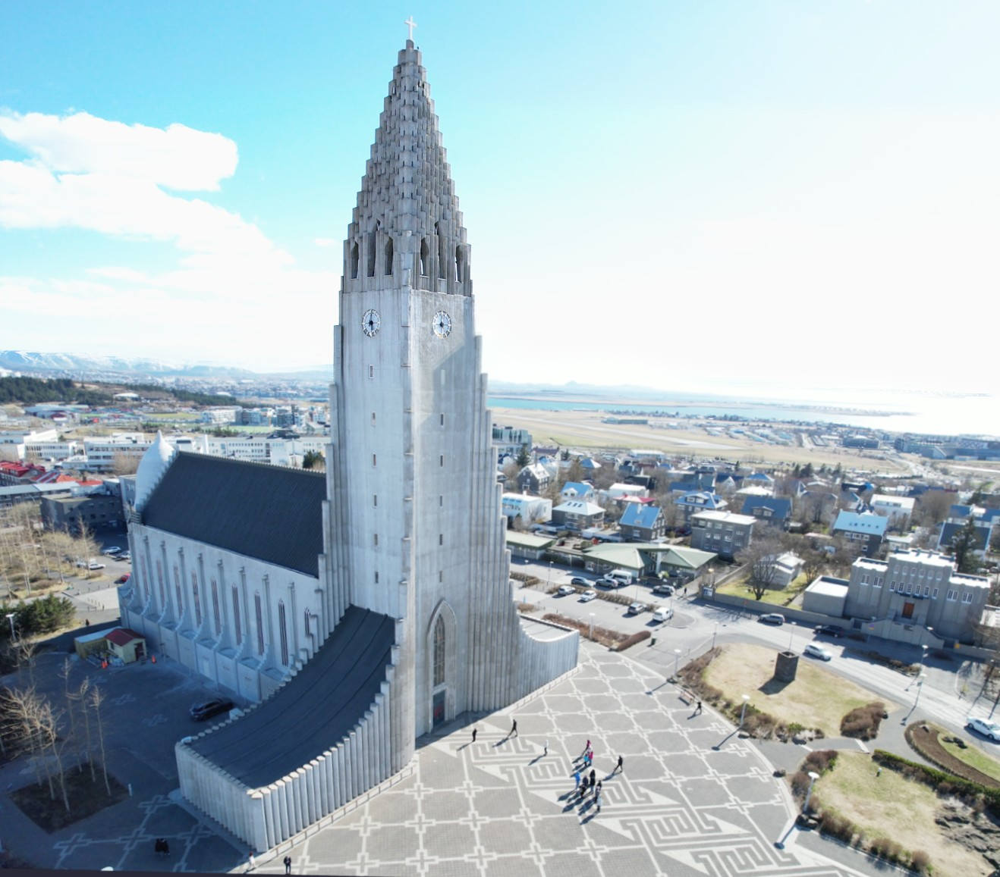
🚶 5 min · 🚕 2 min → Settlement Exhibition
2. Settlement Exhibition
↳ Built around a Viking-age longhouse discovered in 2001 — the best-preserved 10th-century settlement remains in Reykjavík, displayed in situ beneath a glass floor with immersive multimedia archaeology.
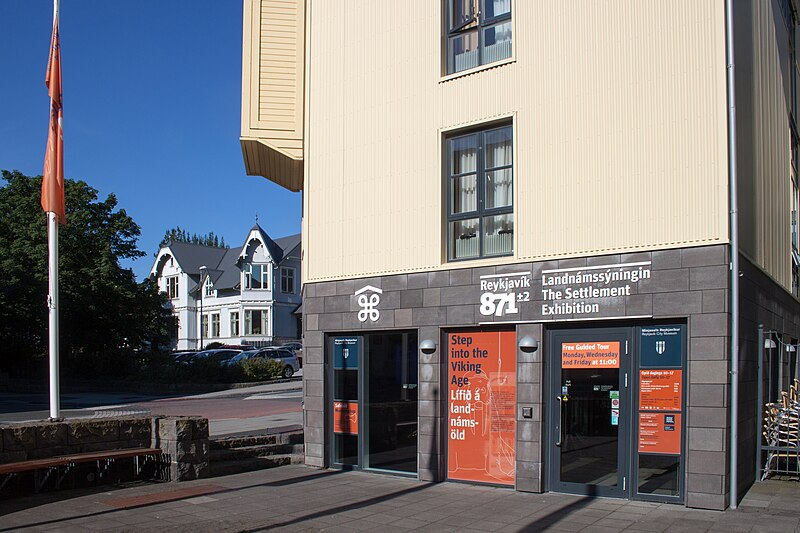
🚶 21 min · 🚕 7 min → Sundhöllin
3. Sundhöllin Swimming Pool
↳ Reykjavík's oldest public pool, designed by Guðjón Samúelsson in 1937 and fully renovated in 2017 — geothermal hot pots, an outdoor pool, and local swimming culture at its most authentic and unhurried.
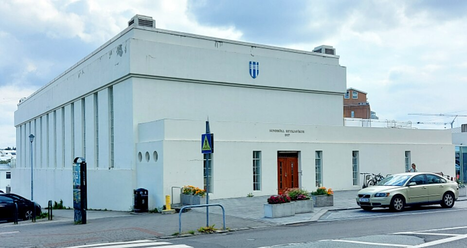
🚶 23 min · 🚕 7 min → National Museum
4. National Museum of Iceland
↳ Three floors trace Iceland's story from Viking-age arrivals to the 20th century — sagas, ecclesiastical treasures, folk objects, and one of the most comprehensive Nordic collections in Scandinavia.
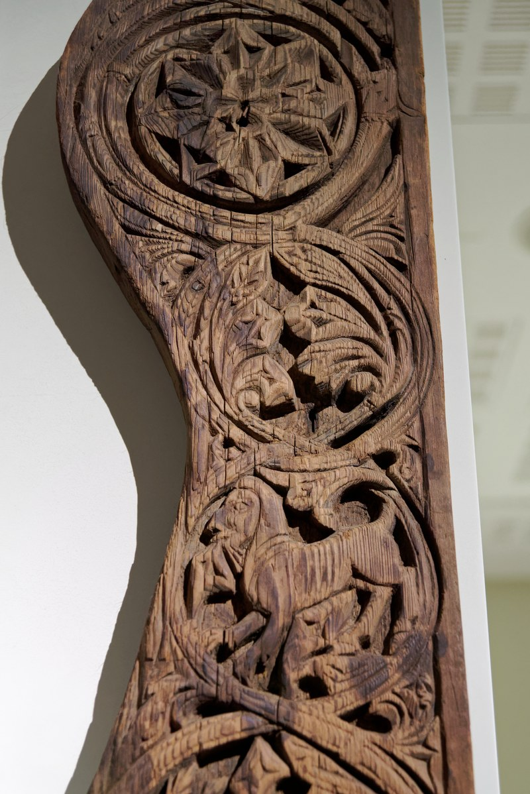
🚶 5 min · 🚕 3 min → hotel
Day 3
🏨 From Hotel: 🚕 47 min → Þingvellir National Park
1. Þingvellir National Park
↳ A rift-valley national park on the Mid-Atlantic Ridge where the North American and Eurasian plates pull apart. Site of Iceland's Alþing parliament founded in 930, and a UNESCO World Heritage Site since 2004.
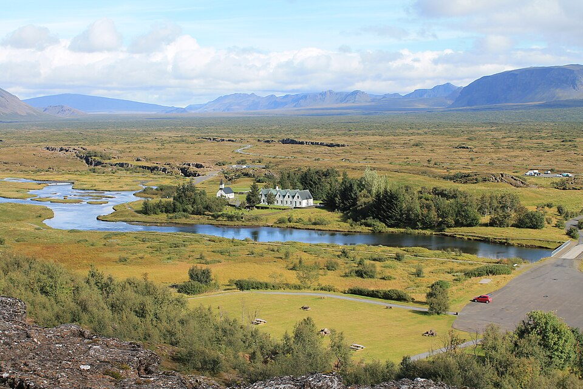
🚕 50 min → Geysir & Strokkur
2. Geysir & Strokkur
↳ An active geothermal field in the Haukadalur valley with hot springs, mud pools and fumaroles. The fountain geyser Strokkur erupts every 6 to 10 minutes to 15 to 20 metres, beside the dormant Great Geysir that named all geysers.
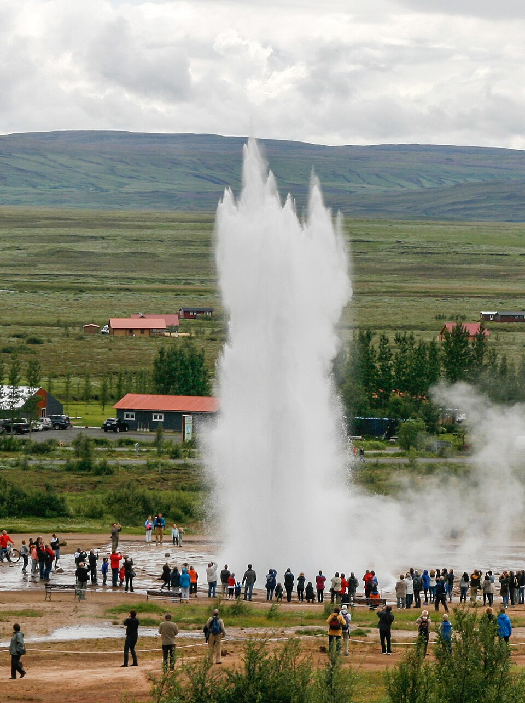
🚕 13 min → Gullfoss
3. Gullfoss
↳ The "Golden Falls" — a two-tiered waterfall on the glacial Hvítá river dropping 11 metres then 21 metres into a canyon up to 70 metres deep. Saved from hydroelectric development and protected as a conservation site since 1979.
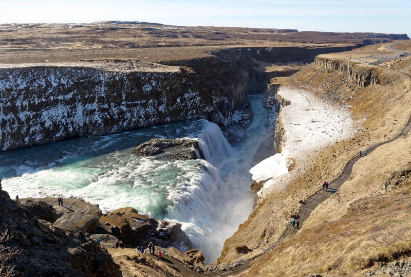
🚕 52 min → Kerið
4. Kerið
↳ A volcanic crater lake in the Grímsnes area, formed roughly 6,500 years ago. The caldera is about 55 metres deep, with walls of red volcanic rock encircling vivid blue-green water.
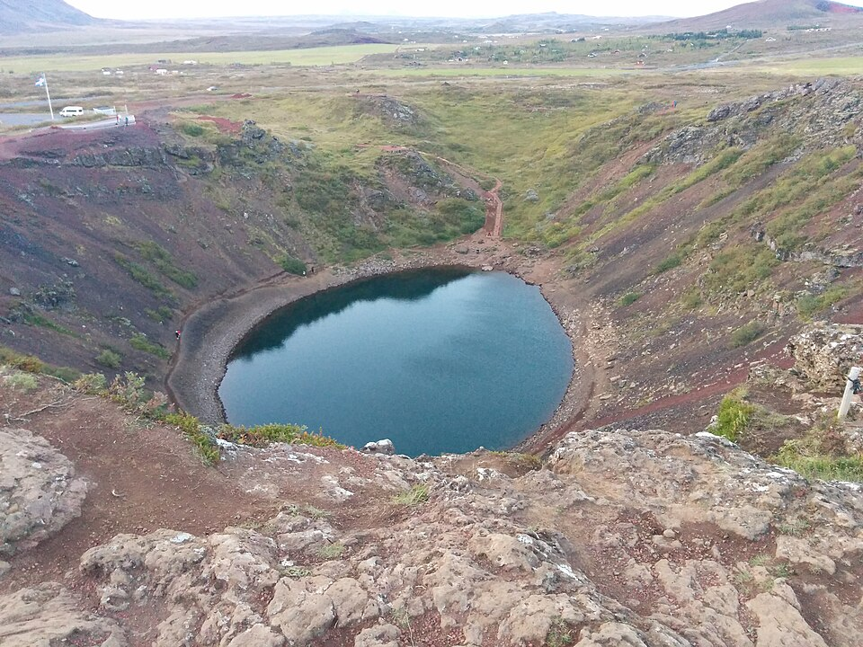
🚕 1h 5min → hotel
Day 4
🏨 From Hotel: 🚕 1h 50min → Seljalandsfoss
1. Seljalandsfoss
↳ A 60-metre waterfall on the Seljalands river, fed by meltwater from the Eyjafjallajökull glacier-volcano. A footpath leads behind the falling water — one of few waterfalls in the world offering this view.
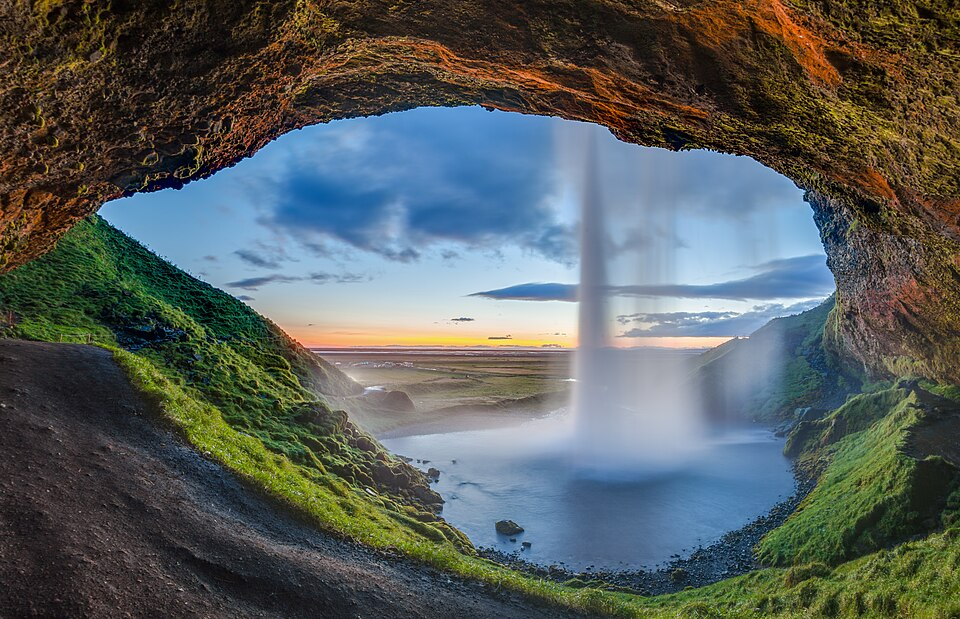
🚕 25 min → Skógafoss
2. Skógafoss
↳ A 60-metre-high, 25-metre-wide waterfall on the Skógá river in the village of Skógar. A staircase climbs to a viewing platform at the top, and the spray frequently throws rainbows across the falls on sunny days.
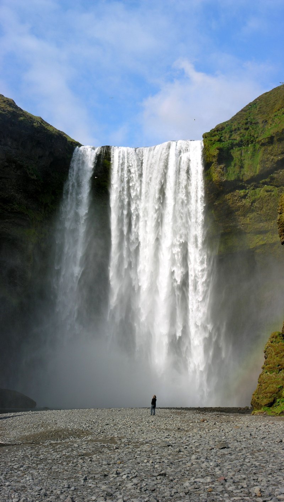
🚕 25 min → Dyrhólaey
3. Dyrhólaey
↳ A 120-metre promontory and nature reserve forming Iceland's southernmost point, named for the large sea-eroded arch in its headland. Puffins nest on the cliffs from May to August, and a lighthouse crowns the summit.
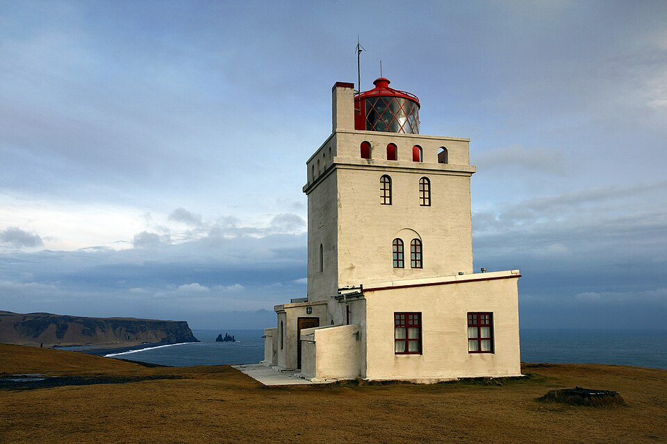
🚕 20 min → Reynisfjara
4. Reynisfjara
↳ A black-sand beach near Vík backed by basalt columns and the Hálsanefshellir cave, with the Reynisdrangar sea stacks offshore. Powerful sneaker waves make the surf zone dangerous — a warning-light system marks restricted areas.
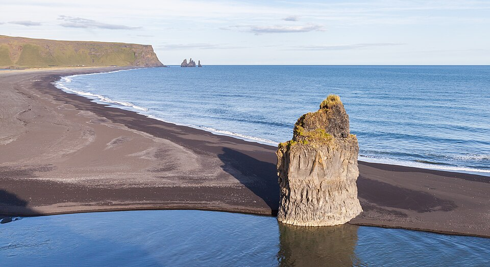
🚕 2h 25min → hotel
Day 5
🏨 From Hotel: 🚕 2h 20min → Búðakirkja
1. Búðakirkja
↳ An iconic black wooden church in the hamlet of Búðir, set in the Búðahraun lava field on the south coast of Snæfellsnes. The current church dates to 1848; its pitch-painted timber against the lava is among the most photographed in Iceland.
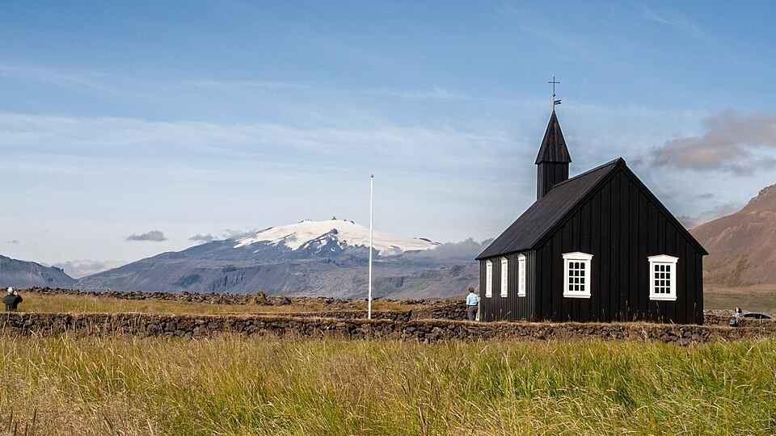
🚕 20 min → Arnarstapi
2. Arnarstapi
↳ A small fishing village on the southern side of Snæfellsnes, within Snæfellsjökull National Park. Known for dramatic basalt sea cliffs, the Gatklettur stone arch, summer seabird colonies, and a coastal trail to neighbouring Hellnar.
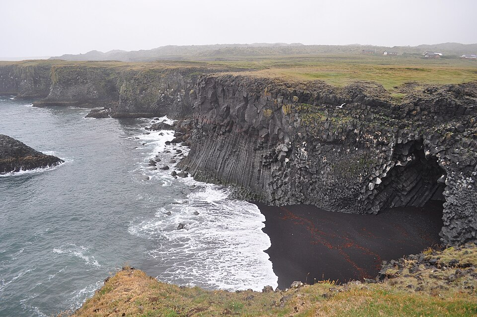
🚕 15 min → Djúpalónssandur
3. Djúpalónssandur
↳ A black-pebble beach within Snæfellsjökull National Park at the foot of the glacier. It holds four historic fishermen's lifting stones once used to test crew strength, and the rusted iron remains of the British trawler Epine, wrecked here in 1948.

🚕 1h 15min → Kirkjufell
4. Kirkjufell & Kirkjufellsfoss
↳ A 463-metre peak near Grundarfjörður, often called the most photographed mountain in Iceland, with the small Kirkjufellsfoss waterfall providing the classic foreground. It appeared as the "arrowhead mountain" in Game of Thrones.
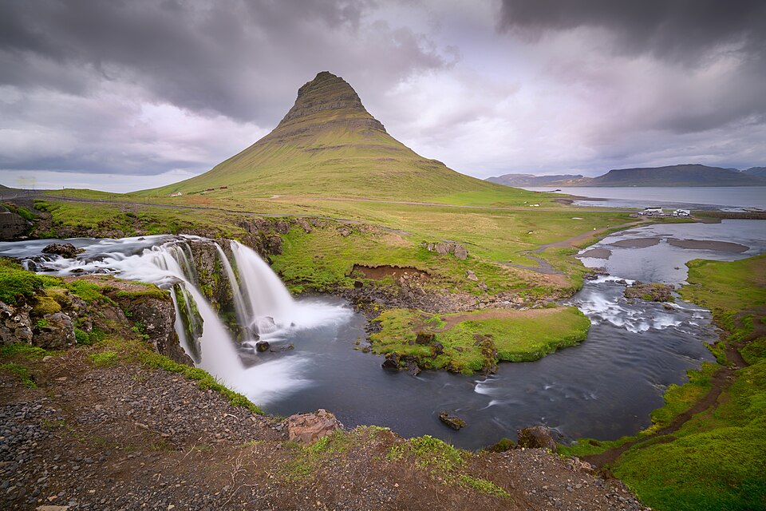
🚕 2h 35min → hotel
Day 6
🏨 From Hotel: 🚕 10 min → Öskjuhlíð / Perlan
1. Öskjuhlíð Hill Walk
↳ Forested hill rising over the city — 4 km of walking trails through birch and planted pine with panoramic views of the bay and mountains in every direction. The summit trail leads naturally to Perlan's glass dome.
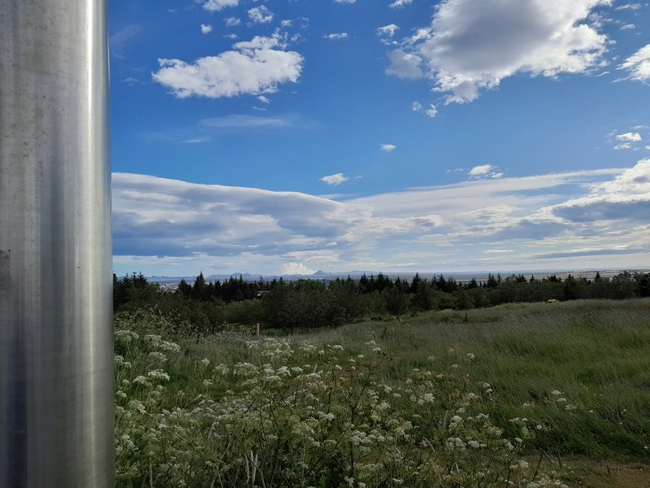
🚶 5 min · 🚕 3 min → Perlan Museum
2. Perlan Museum
↳ Iceland's showcase natural-history museum inside a glass dome atop six geothermal hot-water tanks — an indoor glacier cave, a Northern Lights planetarium show, and a rooftop observation deck with 360° views.
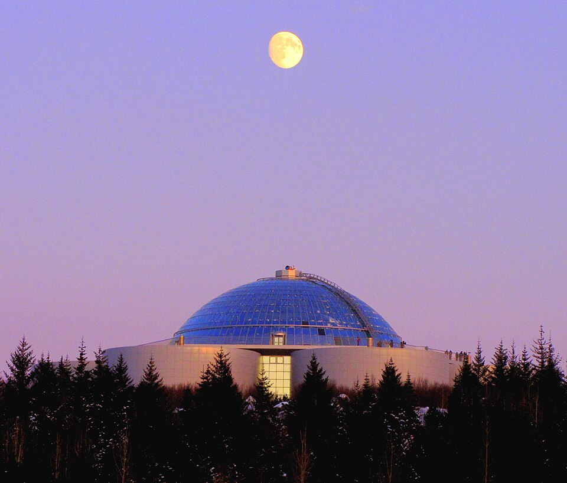
🚶 10 min · 🚕 4 min → Nauthólsvík Beach
3. Nauthólsvík Geothermal Beach
↳ Reykjavík's geothermal beach on Faxaflói Bay — geothermal pumps warm a golden crescent where locals swim year-round. One of the most distinctly Icelandic city experiences.
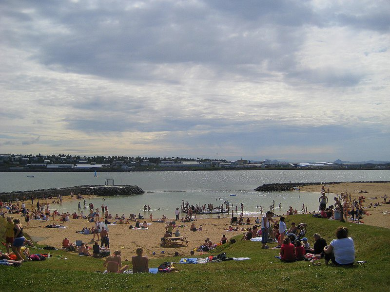
🚕 20 min → Sky Lagoon
4. Sky Lagoon
↳ Infinity-edge geothermal lagoon on a Reykjavík headland with unobstructed Atlantic views. The seven-step Skjól ritual — sauna, cold plunge, steam, mist, warmth — is the full experience. Advance booking required.
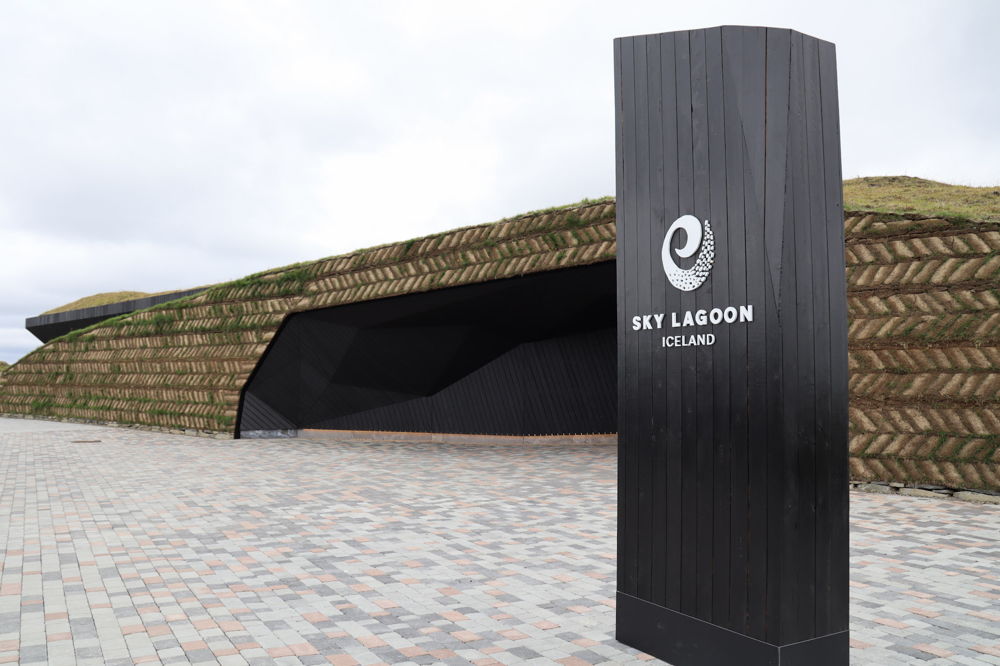
🚕 15 min → hotel
Day 7
🏨 From Hotel: 🚕 57 min → Blue Lagoon
1. Blue Lagoon
↳ Iceland's most famous geothermal spa — milky blue silica-rich waters set in a lava field, with in-water bar, silica face masks, and a multi-level retreat complex. Advance booking is mandatory; slots fill weeks ahead.
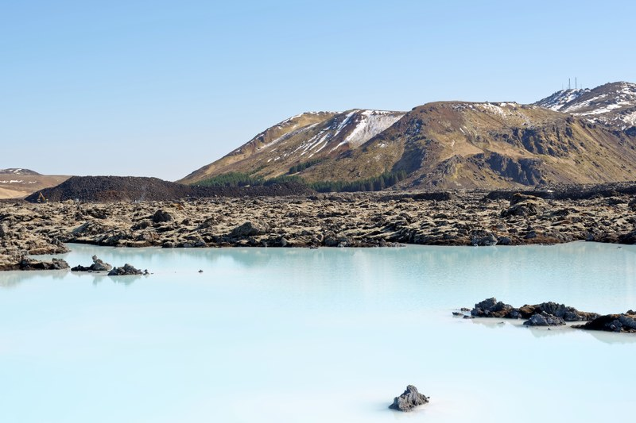
🚕 26 min → Bridge Between Continents
2. Bridge Between Continents
↳ A short pedestrian bridge over the Reykjanes rift — the visible gap between the Eurasian and North American tectonic plates, one of the few places on earth where you can walk between continents above sea level.
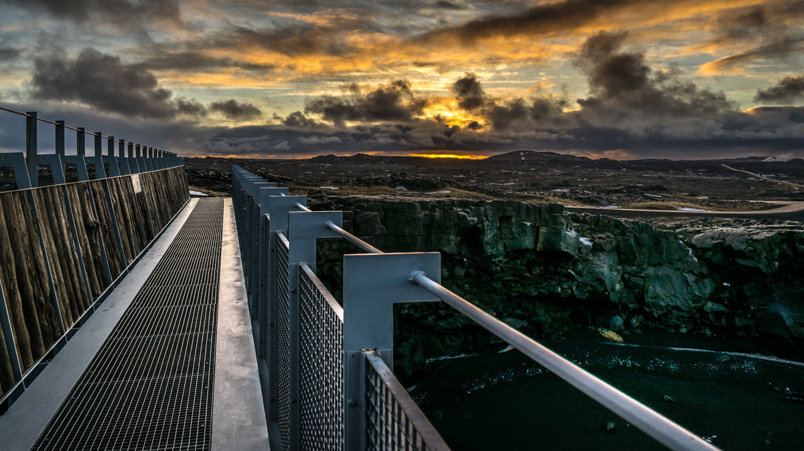
🚕 10 min → Gunnuhver
3. Gunnuhver Hot Springs
↳ Iceland's largest hot-spring field — bubbling mud pools and roaring steam vents at the tip of the Reykjanes UNESCO Global Geopark. Named for a legendary ghost whose energy is said to rise here in perpetuity.
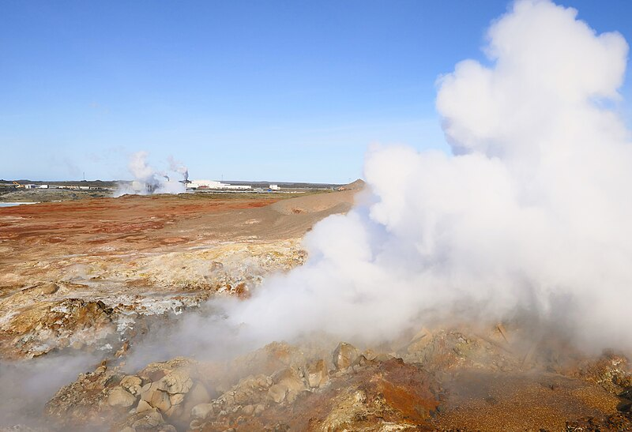
🚕 22 min → Valahnúkamöl
4. Valahnúkamöl Sea Cliffs
↳ Dramatic black-lava sea cliffs at the tip of the Reykjanes Peninsula, pounded by Atlantic surf and home to nesting seabirds. The ruins of Iceland's oldest lighthouse · 1878 stand at the cliff edge as a final landmark.
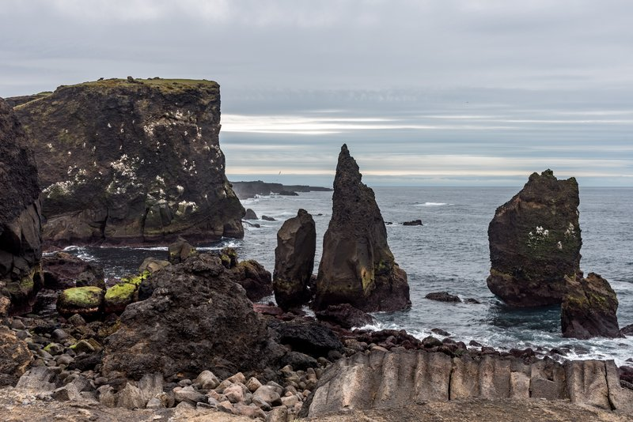
🚕 1h 6min → hotel
Day 8
🏨 From Hotel: 🚕 2h 15min → Háifoss
1. Háifoss
↳ A 122-metre waterfall on the river Fossá at the inner edge of Þjórsárdalur near the volcano Hekla. One of the highest waterfalls in Iceland, it plunges into a deep, narrow canyon beside its smaller neighbour Granni.
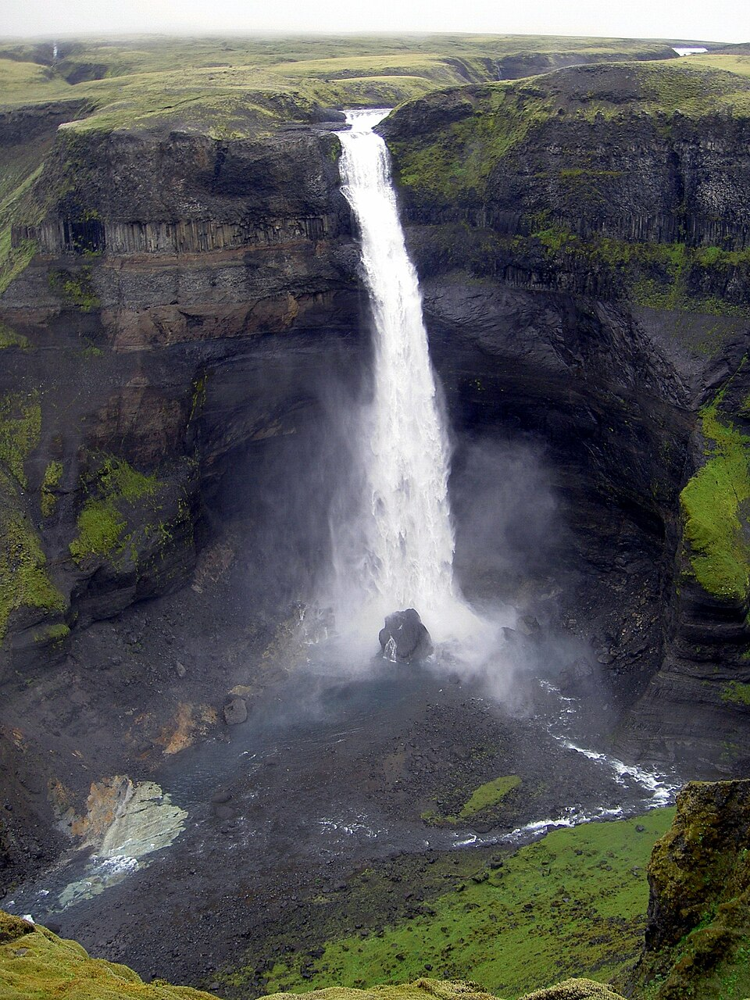
🚕 1h → Sigöldugljúfur
2. Sigöldugljúfur
↳ A highland canyon lined with dozens of slender waterfalls cascading over moss-covered cliffs into a blue-green river, earning it the nickname Valley of Tears. The flow was reduced after the Sigalda hydropower plant opened in 1978.
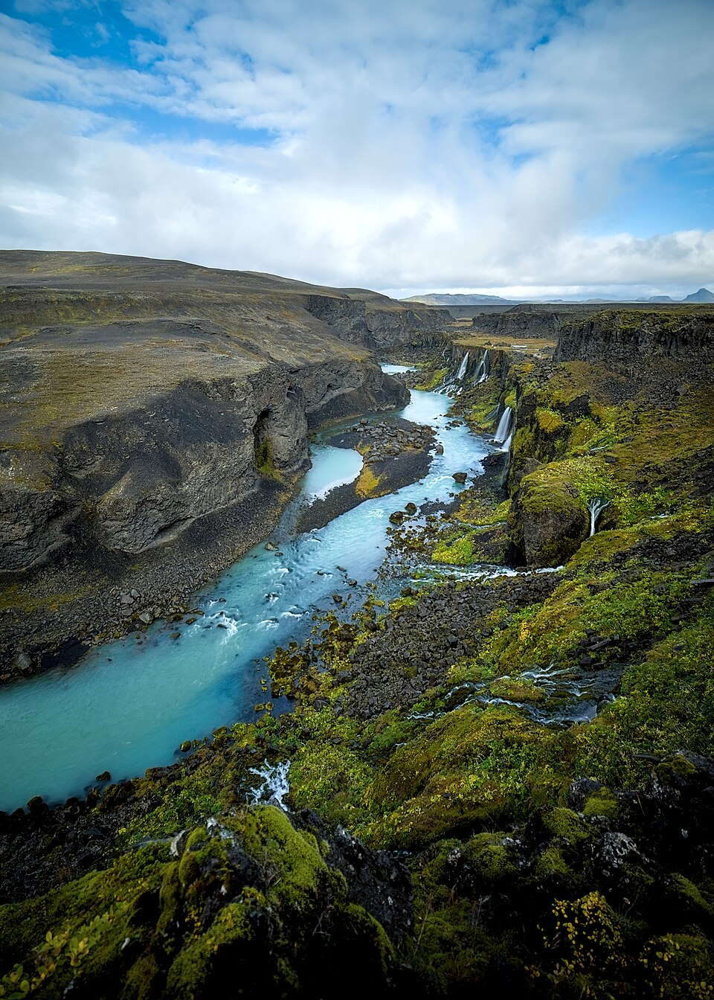
🚕 45 min → Landmannalaugar
3. Landmannalaugar
↳ A geothermal area in the Fjallabak Nature Reserve, famed for multicoloured rhyolite mountains, the Laugahraun lava field, and a natural hot spring beside the campground. It is the start of the Laugavegur trail.
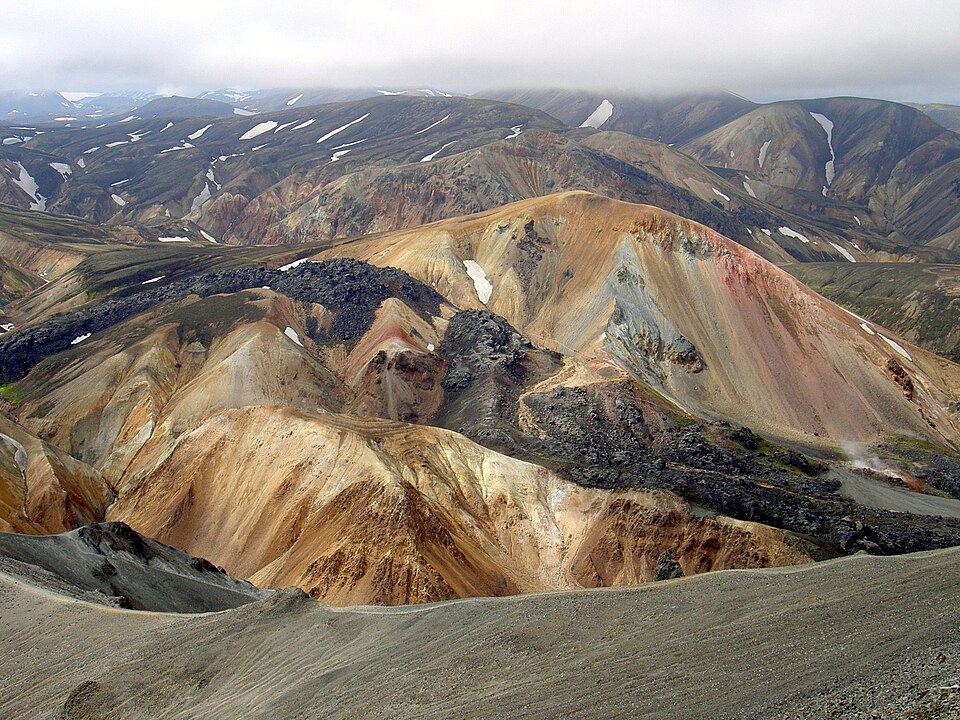
🚕 3h 15min → hotel
🗓️ Weekly Closures
Museums · Closed Monday
📅 Tours
Viator
↳ Small-group minibus loop of the Golden Circle — Þingvellir rift valley, the Geysir field with erupting Strokkur, and Gullfoss waterfall. Guided full-day sightseeing.
🕐 8:30am · ⏳ 8h · 👥 Up to 19
🚶 1 min · 🚕 1 min
↳ Small-group minibus along the south coast to Seljalandsfoss and Skógafoss waterfalls and Reynisfjara black-sand beach near Vík, with views toward Eyjafjallajökull.
🕐 8:00am · ⏳ 10h · 👥 Up to 19
🚶 1 min · 🚕 1 min
↳ Cruise from the Old Harbour into Faxaflói Bay to spot minke and humpback whales, white-beaked dolphins and harbour porpoises, with an onboard marine guide.
🕐 9:00am · ⏳ 3h · 👥 Large boat
🚶 12 min · 🚕 4 min
↳ Full-day loop of the Snæfellsnes Peninsula — Kirkjufell mountain, Arnarstapi cliffs, Búðakirkja black church, Djúpalónssandur beach and Snæfellsjökull glacier views.
🕐 8:00am · ⏳ 11h · 👥 Up to 19
🚶 1 min · 🚕 1 min
↳ Small-group walk through Reykjavík's landmarks, history and local culture, starting at the highest point in town and running downhill. Family friendly and wheelchair accessible.
🕐 10:00am · ⏳ 2h · 👥 Small group
🚶 5 min · 🚕 2 min
↳ History-focused small-group walk led by a local storyteller through the old town and central landmarks, bringing Reykjavík's past and culture to life.
🕐 1:00pm · ⏳ 2.5h · 👥 Small group
🚶 3 min · 🚕 2 min
GetYourGuide
↳ Round-trip bus to the Raufarhólshellir lava tunnel near Þrengsli, with a guided walk into the colourful lava tube including a lights-off moment. Underground geology.
🕐 9:00am · ⏳ 4h · 👥 Small group
🚶 1 min · 🚕 1 min
↳ Small-group speedboat excursion spotting minke whales, humpback whales, dolphins, and porpoises in Faxaflói Bay with marine biologist guide and expert narration.
🕐 9:00am · ⏳ 2h · 👥 Small group
🚶 12 min · 🚕 4 min
↳ Evening speedboat tour with puffin and whale watching in Faxaflói Bay. Summer season combines Midnight Sun sightseeing with marine wildlife viewing for unique twilight experience.
🕐 7:00pm · ⏳ 2.5h · 👥 Medium group
🚶 12 min · 🚕 4 min
↳ Early morning speedboat adventure into Faxaflói Bay to spot minke and humpback whales, white-beaked dolphins, and harbour porpoises with expert naturalist guide.
🕐 8:00am · ⏳ 2.5h · 👥 Medium boat
🚶 12 min · 🚕 4 min
↳ Small-group afternoon tour visiting Þingvellir National Park, the Geysir geothermal area, and Gullfoss waterfall — the three icons of Iceland's Golden Circle route.
🕐 12:00pm · ⏳ 6h · 👥 Small group
🚶 5 min · 🚕 2 min
TripAdvisor
↳ Award-winning small-group food tour visiting 5 restaurants and specialty food venues, sampling classic Icelandic seafood, lamb dishes, and local delicacies with expert foodie guide.
🕐 10:00am · ⏳ 3h · 👥 Max 12 people
📍 Downtown
🚶 5 min · 🚕 2 min
↳ Small-group walking tour exploring heritage recipes, foraged ingredients, and food stories at select restaurants and markets, with tastings of Icelandic wines and craft beers.
🕐 11:00am · ⏳ 3h · 👥 Small group
🚶 6 min · 🚕 3 min
↳ Afternoon loop of Iceland's most famous sites — Þingvellir National Park rift valley, Strokkur geyser eruptions, and Gullfoss waterfall — with knowledgeable local guide and small-group setting.
🕐 1:00pm · ⏳ 7h · 👥 10-20 people
🚶 2 min · 🚕 1 min
↳ Guided walking tour covering Reykjavík landmarks including Hallgrimskirkja church, Austurvollur Square, Old Harbour, city museums, and local history with cultural insights.
🕐 10:00am · ⏳ 2.5h · 👥 Small group
🚶 8 min · 🚕 2 min
↳ Winter night small-group hunt for Northern Lights across Iceland's dark skies with stops at prime aurora viewing locations, warm refreshments, and expert aurora guide.
🕐 9:00pm · ⏳ 8h · 👥 Small group
🚶 5 min · 🚕 2 min
☕ Cappuccino
Stofan Café · 4.5⭐ · 500+ reviews
Kaffi Ó-le · 4.7⭐ · 300+ reviews
🏛️ Monday - Friday 8:00am - 4:00pm · Saturday - Sunday 9:00am - 4:00pm
🚶 6 min · 🚕 3 min
Kaktus Espressobar · 4.7⭐ · 500+ reviews
🏛️ Monday - Friday 7:30am - 6:00pm · Saturday - Sunday 9:00am - 6:00pm
🚶 7 min · 🚕 3 min
Mokka Kaffi · 4.4⭐ · 1000+ reviews
Reykjavík Roasters · 4.6⭐ · 1000+ reviews
🏛️ Monday - Friday 8:00am - 6:00pm · Saturday - Sunday 9:00am - 6:00pm
🚶 14 min · 🚕 5 min
🫕 Restaurants Near Hotel
Apotek Restaurant · 4.6⭐ · 2000+ reviews
↳ New Nordic gastropub in a converted pharmacy · cocktails, seasonal plates.
🏛️ Daily 11:30am - 10:00pm
🚶 2 min · 🚕 1 min
Grillmarkaðurinn · 4.6⭐ · 1500+ reviews
↳ Upscale Icelandic grill · local lamb, Arctic char, volcanic stone platters.
🏛️ Daily 5:30pm - 10:00pm
🚶 2 min · 🚕 1 min
Sæta Svínið Gastropub · 4.5⭐ · 1000+ reviews
↳ Lively Icelandic gastropub · sharing plates · local lamb · hearty fare.
🏛️ Daily 11:30am - 11:00pm
🚶 3 min · 🚕 1 min
Snaps Bistro · 4.4⭐ · 600+ reviews
↳ Cosy French bistro · moules-frites, beef tartare, Icelandic twists.
🏛️ Daily 11:30am - 10:00pm
🚶 4 min · 🚕 2 min
Sümac · 4.5⭐ · 1000+ reviews
↳ Middle Eastern on Icelandic ingredients · Beirut-inspired, dinner-only.
🏛️ Tuesday - Thursday 5:30pm - 11:00pm · Friday - Saturday 5:30pm - 11:30pm
🚫 Closed Sunday–Monday
🚶 9 min · 🚕 3 min
🍽️ Downtown Restaurants
Skál! · 4.8⭐ · 500+ reviews
↳ Nordic small plates · fermentation + smoke · favourite on the Njálsgata bar row.
🏛️ Daily 12:00pm - 11:00pm
Matur og Drykkur · 4.5⭐ · 500+ reviews
↳ Icelandic heritage recipes · head cheese, lamb belly, rye bread ice cream.
🏛️ Wednesday - Sunday 6:00pm - 11:00pm
🚫 Closed Monday–Tuesday
Bryggjuhúsið · 4.5⭐ · 10+ reviews
↳ Converted harbour warehouse · Icelandic comfort food + local craft beer.
🏛️ Daily 4:00pm - 10:00pm
Fjallkonan · 4.6⭐ · 500+ reviews
↳ Theatrical Icelandic cuisine — reindeer, lamb stew, skyr desserts downtown.
🏛️ Daily 11:30am - 11:00pm
ROK Restaurant · 4.5⭐ · 500+ reviews
↳ New Nordic small plates · turf-roofed bistro facing Hallgrímskirkja.
🏛️ Monday - Friday 11:30am - 11:00pm · Saturday - Sunday 12:00pm - 11:00pm
🍮 Local Tastes
Pylsur — The Icelandic Hot Dog
↳ A lamb-and-pork hot dog topped with raw onion, crispy fried onion, ketchup, sweet mustard · pylsusinnep, and remoulade. The bun is steamed. Bill Clinton ordered one without onions in 2004; the stand still has the sign.
Skyr
↳ Iceland's ancient dairy product — thick, mild, high-protein, and closer to strained yoghurt than cheese. Eaten as breakfast with berries and cream, or as a dessert. Icelanders have eaten it for over a thousand years.
Kleinur
↳ Iceland's traditional twisted doughnut — a fried pastry dusted in sugar, lighter than a German Berliner, with a distinct cardamom-tinged flavour. Found in every bakery and petrol station across the country.
Hangikjöt
↳ Slow-smoked lamb, traditionally smoked over sheep dung and birch. The smoke is deep and complex; the meat is tender and slightly gamey. Served cold in thin slices on flatbread · flatkaka, or hot with potatoes and white sauce.
Kjötsúpa — Lamb Soup
↳ Iceland's national soup — bone-in lamb simmered for hours with root vegetables · turnip, rutabaga, carrot, potato and pearl barley. Thick, warming, and deeply savoury. The standard winter meal for a thousand years.
🎭 Shows, Performances & Concerts
No exceptional shows, performances, or concerts in Reykjavík.
🚆 Train Stations Near Hotel
No train stations in Reykjavík — Iceland has no passenger rail network.
⛲️ Day Trips by Train
No qualifying day trips from Reykjavík.
⭐ Michelin Restaurants
⭐ DILL
↳ Foraged Nordic tasting menu in intimate room; Iceland's most celebrated kitchen.
🚶 14 min · 🚕 7 min
⭐ ÓX
↳ 20-seat omakase counter behind a bookshelf door; intimate and extraordinary.
🚶 13 min · 🚕 7 min